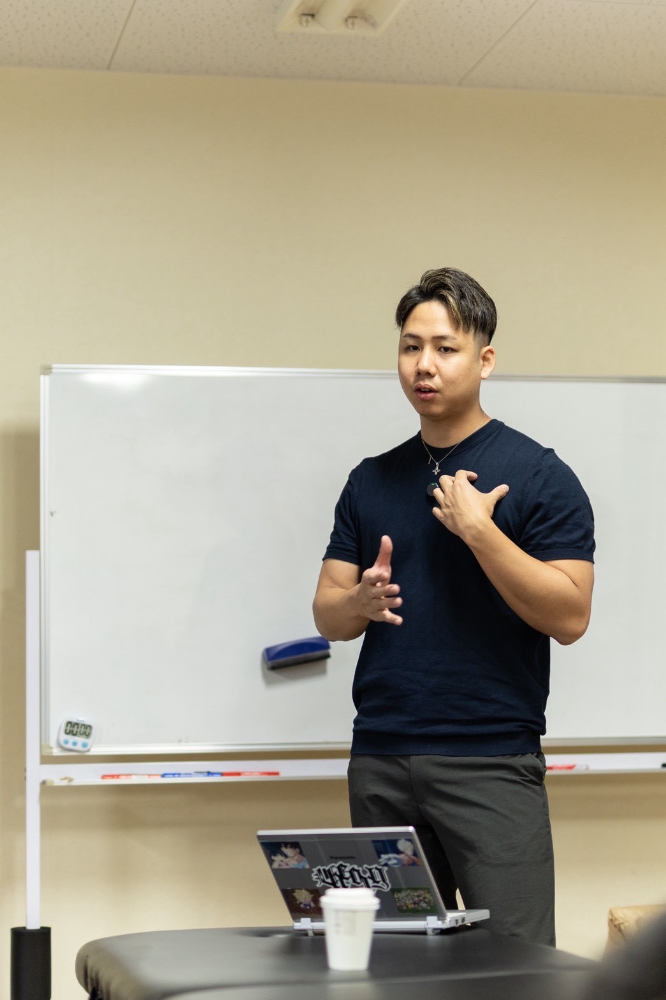
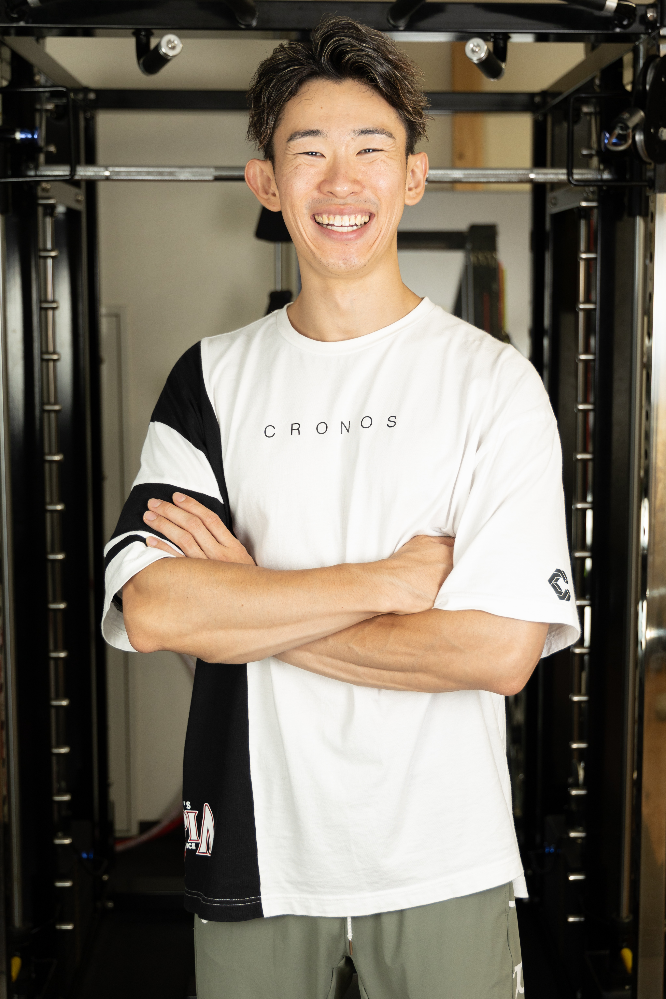
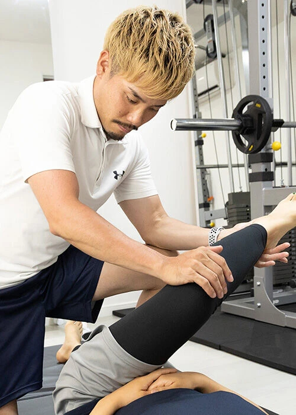
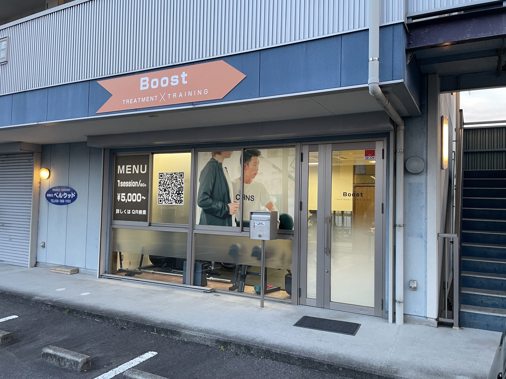
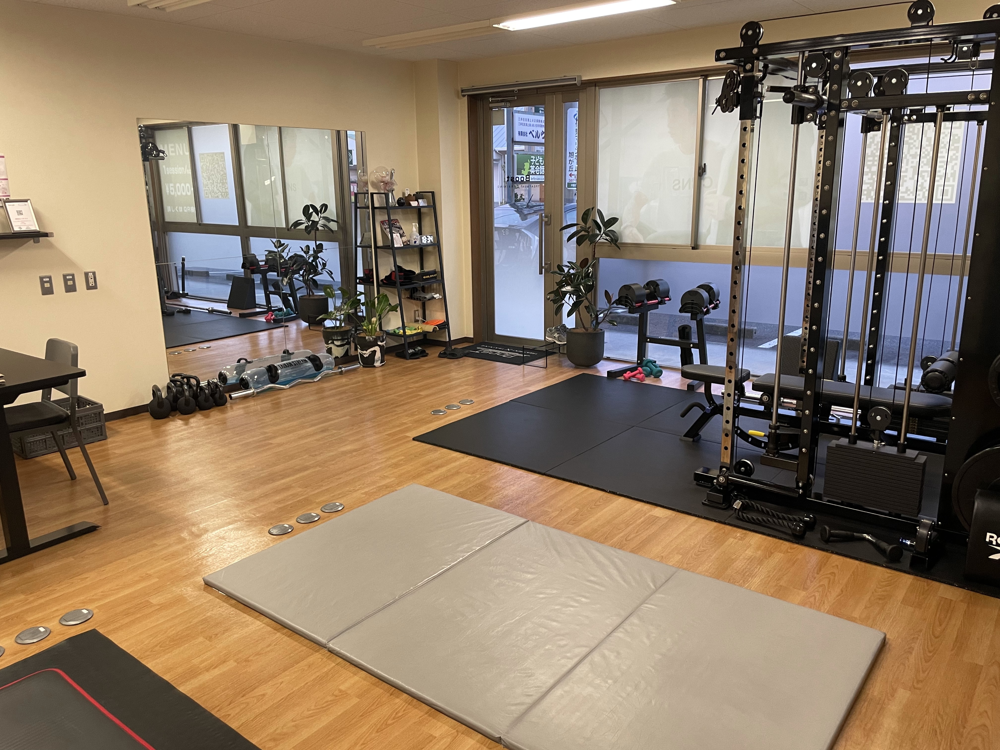

現場の悩み
施術しても戻る。ストレッチしても維持できない。評価が曖昧で介入が再現できない。 そんな現場の課題を、神経科学の視点から解き明かします。
施術しても戻る
その場で整っても、日常に戻るとまた崩れる。一時的な改善で終わってしまう。
評価が曖昧
どこから崩れているか見極められず、介入の優先順位が決められない。
再現性がない
クライアントによって反応が違い、同じ方法が通用しない。
説明が苦手
「なぜ」を説明できず、クライアントの理解と納得が得られない。
単価が上がらない
技術の価値を伝えきれず、価格設定に自信が持てない。
維持できない
クライアントがセルフケアを継続できず、リピートに繋がらない。
よくある勘違い
姿勢改善の「常識」が、実は間違い。神経科学の視点から真実を解き明かします。
間違い
「筋力不足」が原因
筋トレすれば姿勢は良くなる。腹筋背筋を鍛えれば解決する。
真実
「神経回路」が問題
運動パターンが固着している。筋力より、脳と神経の再教育が必要。
間違い
「意識」で直る
姿勢を意識すれば良くなる。気がついたときに直せば改善する。
真実
「入力」で変わる
適切な刺激を入力し、脳が自動的に正しい姿勢を選択する状態を作る。
解決策：メソッド｜解剖 × 神経科学 × 運動学習
神経科学×運動学習をベースにした、再現性の高い姿勢改善メソッド。
STEP 1
神経評価
どこから崩れているかを神経学的に特定。優先順位を科学的に決定します。
STEP 2
入力設計
脳が正しい姿勢を「自然に選択する」刺激を設計。無意識の変化を促します。
STEP 3
運動学習
日常動作に落とし込み、維持できる体に再教育。セルフケアも確立します。
60分セッションとして現場で使える
評価→入力→学習の流れをテンプレ化し、明日から現場で使える形に落とし込みます。 初心者でも再現できる手順と、上級者向けの応用も両立しています。
得られる未来
このセミナーで、あなたの現場と価値がどう変わるか。
クライアントの変化
- その場だけでなく、日常で維持できる
- 痛みや不快感が減り、動きがラクになる
- セルフケアを習慣化できる
あなたの変化
- 説明力が向上し、クライアントの納得度が上がる
- 再現性が高まり、どんなクライアントにも対応できる
- 単価を上げ、収益を改善できる
違い
他のセミナーと何が違うのか。
従来の方法
筋トレ・ストレッチ・意識づけ。その場の変化はあるが、維持は難しい。
このセミナー
神経科学×運動学習。無意識の変化を促し、維持できる体を再設計。
結果
90分で「一生モノの技術」を習得。明日から現場で使える。

講師紹介
講師名
原口 慶篤
身体の改善に12年以上向き合ってきた身体の専門家。 解剖学・生理学・運動学・神経学をベースに、カイロプラクティックやオステオパシー、さらに東洋医学の「経絡」、頭蓋アプローチなど多分野の技術を深く探求・統合。
身体を「構造」「神経」「エネルギー」の3つの視点から総合的に評価し、根本から改善に導く独自メソッドを構築。 現在は自身のサロンでパーソナルトレーナー・整体師として数多くのクライアントに結果を出し続ける傍ら、セミナー講師として全国のトレーナーや治療家向けに、実践的かつ本質的な技術指導を行っている。
資格
- • NASM-PES（米国スポーツ医学会公認パフォーマンス向上スペシャリスト）
- • NSCA-CPT（全米ストレングス&コンディショニング協会認定パーソナルトレーナー）
- • 国際鍼資格
- • 国際あん摩マッサージ師
- • オステオパシー各種修了
- • 赤十字救急救命士
経歴
- 鍼灸整骨院にて、トレーナー・整体師として現場経験を積む
- 2019年 専門学校に再入学し知識を深化
- 2020年 学生のまま独立（コンディショニングを強み）
実績
- HP無し広告無し口コミ紹介のみでリピート客が後を絶たない
- 独自のゼロ調整技術で様々な身体の問題を解決
- 企業研修4社にて、身体のプロへ技術指導
カリキュラム
内容
神経科学×運動学習の視点から、姿勢改善の本質を解き明かします。
【0】美姿勢とは？
姿勢はなぜ戻るのか？
✓ 姿勢を「運動パターン」として捉えられる
✓ 皮質‐基底核‐小脳ループの仕組みを説明できる
✓ 矯正と運動学習の違いを区別できる
【1】姿勢制御の神経解剖
中枢メカニズム
① 大脳基底核
✓ 運動の自動化メカニズムを理解し介入に活かせる
✓ 筋緊張トーン調整のアプローチができる
✓ 習慣姿勢の保存パターンを特定できる
② 小脳
✓ 誤差修正を促すトレーニングが設計できる
✓ バランス制御の評価ができる
✓ 体幹協調を改善するエクササイズができる
③ 脳幹（中脳・網様体）
✓ 抗重力筋制御のアプローチができる
✓ 覚醒レベルと姿勢トーンの関係を説明できる
✓ 網様体脊髄路を意識した介入ができる
④ 皮質‐基底核‐小脳ループ
✓ 運動学習の神経回路を活用した指導ができる
✓ フィードフォワード制御を取り入れたトレーニングができる
【2】姿勢を構成する3入力システム
感覚統合
✓ 視覚入力の評価と調整ができる
✓ 前庭感覚の評価と調整ができる
✓ 体性感覚の評価と調整ができる
→ 3入力の統合結果として姿勢を捉え、介入優先順位を決められる
【3】科学的評価フロー
Step1：視覚評価
✓ 追視・サッカード・固視安定の評価ができる
（眼球運動と姿勢制御の関連を説明できる）
Step2：前庭・バランス評価
✓ 片脚立位・閉眼テスト・頭部回旋下バランスの評価ができる
Step3：体性感覚評価
✓ 足底圧入力変化・関節位置覚・触覚刺激での姿勢変化を評価できる
Step4：呼吸評価
✓ 横隔膜可動・呼吸パターン・腹圧制御の評価ができる
（呼吸と姿勢安定性の関連を説明できる）
【4】神経活性トレーニング
※ 運動学習と感覚入力の再統合
① 小脳系アプローチ
✓ 片脚＋視線課題・不安定面・交差運動が指導できる
② 脳幹系アプローチ
✓ 上方視固定・頸部伸展誘導・抗重力筋活性エクササイズが指導できる
③ 自律神経×呼吸
✓ 呼吸再教育・横隔膜促通・呼気延長が指導できる
【5】施術と神経入力の関係
● 施術は何をしているのか？
✓ 感覚入力の変化を説明できる
✓ 筋緊張変化のメカニズムを説明できる
✓ 痛覚抑制の仕組みを説明できる
✓ 注意の再配分を意識した介入ができる
実技
✓ 後頭下筋群リリースができる
✓ 肋骨可動域改善ができる
✓ 足底刺激ができる
【6】運動学習として定着させる方法
✓ 繰り返し頻度を最適化できる
✓ 課題特異性を考慮したトレーニングができる
✓ 外的フォーカス vs 内的フォーカスを使い分けられる
✓ フィードバック設計ができる
【7】60分セッション構築テンプレ
✓ 神経評価→感覚入力調整→課題型トレーニング→再評価→運動学習課題処方の流れで60分セッションが構築できる
✓ 明日から現場で使えるテンプレートとして持ち帰れる
特典
神経評価シート（PDF）／60分セッションテンプレート／感覚入力マニュアル
お客様の声
過去開催セミナーの感想になります。
前回の美脚美尻セミナーでは、評価→コンディション→トレーニングまでのプランニングを丁寧にご指導いただいたので、次の日からお客様に還元できる内容で現場でも役に立ってます！

パーソナルジムBoost代表
大澤 英明
介入の順番が明確になりました。 姿勢評価→呼吸→動作の流れで指導すると、クライアントの反応が全然違います。

パーソナルジムBAGUS 代表
増田 裕太郎
神経学的な視点が新鮮でした。 今まで当たり前だと思っていたことが、実は科学的根拠がなかったと気づかされました。
治療家
30代女性
開催概要
本セミナーの開催情報です。

会場外観

会場内観
- 日時
- 2026年8月15日（土） 10:00〜18:00
- 場所
- 三重県鈴鹿市中旭が丘１丁目６−２５ パーソナルジムBoost
- 参加費
- 通常：88,000円／早割30%OFF：61,600円
- 定員
- 12名
- 持ち物
- 筆記用具／動きやすい服装（任意）／飲み物
- アーカイブ
- あり（限定動画リンク共有）
現場の意思決定を、ロジックで固める
評価から。神経から再設計せよ。
その場の変化ではなく、維持できる変化を作る。 神経評価→入力設計→運動学習の順番を、現場で使える型に落とし込みます。
早割締切
8月15日 (土) 10:00〜18:00
早割：7月7日 23:59まで／定員に達し次第、受付を終了します。
お申し込み後、案内メールをお送りします。
FAQ
（よくある質問）
クリックで回答が開きます。
目的は"知識"ではなく"再現性"です。 神経評価→入力設計→運動学習の順番をテンプレ化し、60分セッションとして現場に落とし込める形で持ち帰れます。
お申込み後のキャンセルにつきましては、以下の通り対応いたします。
・開催14日前まで：振込手数料を差し引き、全額ご返金
・開催13日前〜7日前まで：受講料の50％を事務手数料として頂戴いたします
・開催6日前〜当日：受講料の100％をキャンセル料として頂戴いたします
※返金時の振込手数料はお客様負担となります。
※代理参加は可能です。代理の方のお名前を事前にご連絡ください。
解剖×評価×施術でつくる
美姿勢セミナー
目的
再現性の獲得
評価・介入・定着をテンプレ化し、現場の意思決定をブレさせない。
成果
収益の改善
説明力と再現性は、そのまま提供価値になる。
早割締切
8月15日 (土) 10:00〜18:00
早割：7月7日 23:59まで／定員に達し次第、受付を終了します。